除了之前介绍过的 基本运算符，Swift 还提供了数种可以对数值进行复杂运算的高级运算符。它们包含了在 C 和 Objective-C 中已经被大家所熟知的位运算符和移位运算符。
与 C 语言中的算术运算符不同，Swift 中的算术运算符默认是不会溢出的。所有溢出行为都会被捕获并报告为错误。如果想让系统允许溢出行为，可以选择使用 Swift 中另一套默认支持溢出的运算符，比如溢出加法运算符（&+）。所有的这些溢出运算符都是以 & 开头的。
自定义结构体、类和枚举时，如果也为它们提供标准 Swift 运算符的实现，将会非常有用。在 Swift 中为这些运算符提供自定义的实现非常简单，运算符也会针对不同类型使用对应实现。
我们不用被预定义的运算符所限制。在 Swift 中可以自由地定义中缀、前缀、后缀和赋值运算符，它们具有自定义的优先级与关联值。这些运算符在代码中可以像预定义的运算符一样使用，你甚至可以扩展已有的类型以支持自定义运算符。
位运算符
位运算符可以操作数据结构中每个独立的比特位。它们通常被用在底层开发中，比如图形编程和创建设备驱动。位运算符在处理外部资源的原始数据时也十分有用，比如对自定义通信协议传输的数据进行编码和解码。
Swift 支持 C 语言中的全部位运算符，接下来会一一介绍。
Bitwise NOT Operator（按位取反运算符）
按位取反运算符（~）对一个数值的全部比特位进行取反：
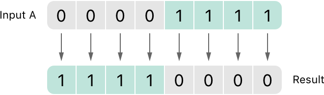
按位取反运算符是一个前缀运算符，直接放在运算数之前，并且它们之间不能添加任何空格：
let initialBits: UInt8 = 0b00001111let invertedBits = ~initialBits // 等于 0b11110000UInt8 类型的整数有 8 个比特位，可以存储 0 ~ 255 之间的任意整数。这个例子初始化了一个 UInt8 类型的整数，并赋值为二进制的 00001111，它的前 4 位为 0，后 4 位为 1。这个值等价于十进制的 15。
接着使用按位取反运算符创建了一个名为 invertedBits 的常量，这个常量的值与全部位取反后的 initialBits 相等。即所有的 0 都变成了 1，同时所有的 1 都变成 0。invertedBits 的二进制值为 11110000，等价于无符号十进制数的 240。
Bitwise AND Operator（按位与运算符）
按位与运算符（&） 对两个数的比特位进行合并。它返回一个新的数，只有当两个数的对应位都为 1 的时候，新数的对应位才为 1：
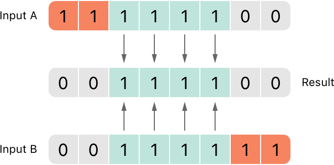
在下面的示例当中，firstSixBits 和 lastSixBits 中间 4 个位的值都为 1。使用按位与运算符之后，得到二进制数值 00111100，等价于无符号十进制数的 60：
xxxxxxxxxxlet firstSixBits: UInt8 = 0b11111100let lastSixBits: UInt8 = 0b00111111let middleFourBits = firstSixBits & lastSixBits // 等于 00111100Bitwise OR Operator（按位或运算符）
按位或运算符（|）可以对两个数的比特位进行比较。它返回一个新的数，只要两个数的对应位中有任意一个为 1 时，新数的对应位就为 1：
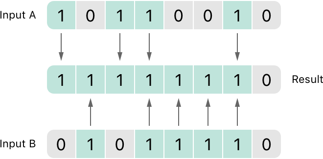
在下面的示例中，someBits 和 moreBits 存在不同的位被设置为 1。使用按位或运算符之后，得到二进制数值 11111110，等价于无符号十进制数的 254：
xxxxxxxxxxlet someBits: UInt8 = 0b10110010let moreBits: UInt8 = 0b01011110let combinedbits = someBits | moreBits // 等于 11111110Bitwise XOR Operator（按位异或运算符）
按位异或运算符，或称“排外的或运算符”（^），可以对两个数的比特位进行比较。它返回一个新的数，当两个数的对应位不相同时，新数的对应位就为 1，并且对应位相同时则为 0：
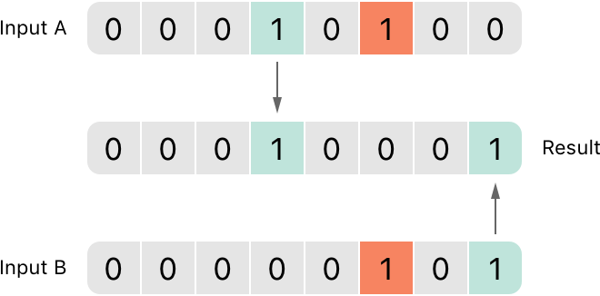
在下面的示例当中，firstBits 和 otherBits 都有一个自己为 1，而对方为 0 的位。按位异或运算符将新数的这两个位都设置为 1。在其余的位上 firstBits 和 otherBits 是相同的，所以设置为 0：
xxxxxxxxxxlet firstBits: UInt8 = 0b00010100let otherBits: UInt8 = 0b00000101let outputBits = firstBits ^ otherBits // 等于 00010001Bitwise Left and Right Shift Operators（按位左移、右移运算符）
按位左移运算符（<<） 和 按位右移运算符（>>）可以对一个数的所有位进行指定位数的左移和右移，但是需要遵守下面定义的规则。
对一个数进行按位左移或按位右移，相当于对这个数进行乘以 2 或除以 2 的运算。将一个整数左移一位，等价于将这个数乘以 2，同样地，将一个整数右移一位，等价于将这个数除以 2。
无符号整数的移位运算
对无符号整数进行移位的规则如下：
- 已存在的位按指定的位数进行左移和右移。
- 任何因移动而超出整型存储范围的位都会被丢弃。
- 用
0来填充移位后产生的空白位。
这种方法称为逻辑移位。
以下这张图展示了 11111111 << 1（即把 11111111 向左移动 1 位），和 11111111 >> 1（即把 11111111 向右移动 1 位）的结果。蓝色的数字是被移位的，灰色的数字是被抛弃的，橙色的 0 则是被填充进来的：
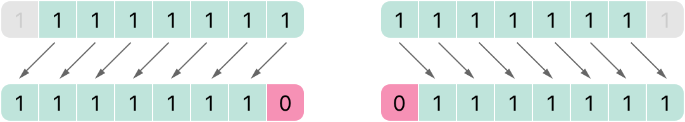
下面的代码演示了 Swift 中的移位运算：
xxxxxxxxxxlet shiftBits: UInt8 = 4 // 即二进制的 00000100shiftBits << 1 // 00001000shiftBits << 2 // 00010000shiftBits << 5 // 10000000shiftBits << 6 // 00000000shiftBits >> 2 // 00000001可以使用移位运算对其他的数据类型进行编码和解码：
xxxxxxxxxxlet pink: UInt32 = 0xCC6699let redComponent = (pink & 0xFF0000) >> 16 // redComponent 是 0xCC，即 204let greenComponent = (pink & 0x00FF00) >> 8 // greenComponent 是 0x66， 即 102let blueComponent = pink & 0x0000FF // blueComponent 是 0x99，即 153这个示例使用了一个命名为 pink 的 UInt32 型常量来存储 Cascading Style Sheets（CSS）中粉色的颜色值。该 CSS 的颜色值 #CC6699，在 Swift 中表示为十六进制的 0xCC6699。然后利用按位与运算符（&）和按位右移运算符（>>）从这个颜色值中分解出红（CC）、绿（66）以及蓝（99）三个部分。
红色部分是通过对 0xCC6699 和 0xFF0000 进行按位与运算后得到的。0xFF0000 中的 0 部分“掩盖”了 OxCC6699 中的第二、第三个字节，使得数值中的 6699 被忽略，只留下 0xCC0000。
然后，将这个数向右移动 16 位（>> 16）。十六进制中每两个字符占用 8 个比特位，所以移动 16 位后 0xCC0000 就变为 0x0000CC。这个数和 0xCC 是等同的，也就是十进制数值的 204。
同样的，绿色部分通过对 0xCC6699 和 0x00FF00 进行按位与运算得到 0x006600。然后将这个数向右移动 8 位，得到 0x66，也就是十进制数值的 102。
最后，蓝色部分通过对 0xCC6699 和 0x0000FF 进行按位与运算得到 0x000099。因为 0x000099 已经等于 0x99 ，也就是十进制数值的 153，所以这个值就不需要再向右移位了。
有符号整数的移位运算
对比无符号整数，有符号整数的移位运算相对复杂得多，这种复杂性源于有符号整数的二进制表现形式。（为了简单起见，以下的示例都是基于 8 比特的有符号整数，但是其中的原理对任何位数的有符号整数都是通用的。）
有符号整数使用第 1 个比特位（通常被称为符号位）来表示这个数的正负。符号位为 0 代表正数，为 1 代表负数。
其余的比特位（通常被称为数值位）存储了实际的值。有符号正整数和无符号数的存储方式是一样的，都是从 0 开始算起。这是值为 4 的 Int8 型整数的二进制位表现形式：
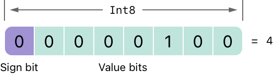
符号位为 0（代表这是一个“正数”），另外 7 位则代表了十进制数值 4 的二进制表示。
负数的存储方式略有不同。它存储 2 的 n 次方减去其实际值的绝对值，这里的 n 是数值位的位数。一个 8 比特位的数有 7 个比特位是数值位，所以是 2 的 7 次方，即 128。
这是值为 -4 的 Int8 型整数的二进制表现形式：
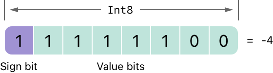
这次的符号位为 1，说明这是一个负数，另外 7 个位则代表了数值 124（即 128 - 4）的二进制表示：
负数的表示通常被称为二进制补码。用这种方法来表示负数乍看起来有点奇怪，但它有几个优点。
首先，如果想对 -1 和 -4 进行加法运算，我们只需要对这两个数的全部 8 个比特位执行标准的二进制相加（包括符号位），并且将计算结果中超出 8 位的数值丢弃：
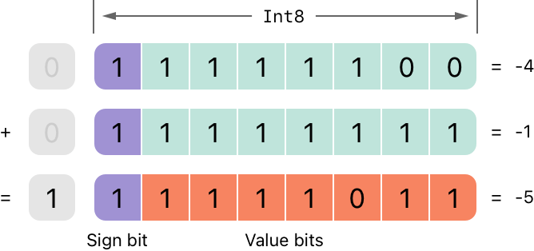
其次，使用二进制补码可以使负数的按位左移和右移运算得到跟正数同样的效果，即每向左移一位就将自身的数值乘以 2，每向右一位就将自身的数值除以 2。要达到此目的，对有符号整数的右移有一个额外的规则：当对有符号整数进行按位右移运算时，遵循与无符号整数相同的规则，但是对于移位产生的空白位使用符号位进行填充，而不是用 0。
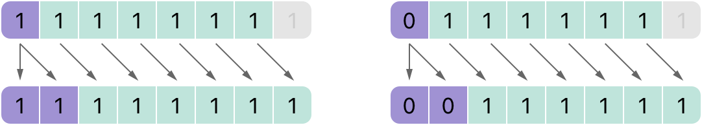
这个行为可以确保有符号整数的符号位不会因为右移运算而改变，这通常被称为算术移位。
由于正数和负数的特殊存储方式，在对它们进行右移的时候，会使它们越来越接近 0。在移位的过程中保持符号位不变，意味着负整数在接近 0 的过程中会一直保持为负。
溢出运算符
当向一个整数类型的常量或者变量赋予超过它容量的值时，Swift 默认会报错，而不是允许生成一个无效的数。这个行为为我们在运算过大或者过小的数时提供了额外的安全性。
例如，Int16 型整数能容纳的有符号整数范围是 -32768 到 32767。当为一个 Int16 类型的变量或常量赋予的值超过这个范围时，系统就会报错：
xxxxxxxxxxvar potentialOverflow = Int16.max// potentialOverflow 的值是 32767，这是 Int16 能容纳的最大整数potentialOverflow += 1// 这里会报错在赋值时为过大或者过小的情况提供错误处理，能让我们在处理边界值时更加灵活。
然而，当你希望的时候也可以选择让系统在数值溢出的时候采取截断处理，而非报错。Swift 提供的三个溢出运算符来让系统支持整数溢出运算。这些运算符都是以 & 开头的：
- 溢出加法
&+ - 溢出减法
&- - 溢出乘法
&*
数值溢出
数值有可能出现上溢或者下溢。
这个示例演示了当我们对一个无符号整数使用溢出加法（&+）进行上溢运算时会发生什么：
xxxxxxxxxxvar unsignedOverflow = UInt8.max// unsignedOverflow 等于 UInt8 所能容纳的最大整数 255unsignedOverflow = unsignedOverflow &+ 1// 此时 unsignedOverflow 等于 0unsignedOverflow 被初始化为 UInt8 所能容纳的最大整数（255，以二进制表示即 11111111）。然后使用溢出加法运算符（&+）对其进行加 1 运算。这使得它的二进制表示正好超出 UInt8 所能容纳的位数，也就导致了数值的溢出，如下图所示。数值溢出后，仍然留在 UInt8 边界内的值是 00000000，也就是十进制数值的 0。
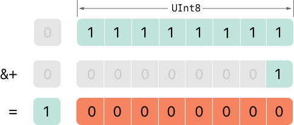
当允许对一个无符号整数进行下溢运算时也会产生类似的情况。这里有一个使用溢出减法运算符（&-）的例子：
xxxxxxxxxxvar unsignedOverflow = UInt8.min// unsignedOverflow 等于 UInt8 所能容纳的最小整数 0unsignedOverflow = unsignedOverflow &- 1// 此时 unsignedOverflow 等于 255UInt8 型整数能容纳的最小值是 0，以二进制表示即 00000000。当使用溢出减法运算符对其进行减 1 运算时，数值会产生下溢并被截断为 11111111， 也就是十进制数值的 255。

溢出也会发生在有符号整型上。针对有符号整型的所有溢出加法或者减法运算都是按位运算的方式执行的，符号位也需要参与计算，正如 按位左移、右移运算符 所描述的。
xxxxxxxxxxvar signedOverflow = Int8.min// signedOverflow 等于 Int8 所能容纳的最小整数 -128signedOverflow = signedOverflow &- 1// 此时 signedOverflow 等于 127Int8 型整数能容纳的最小值是 -128，以二进制表示即 10000000。当使用溢出减法运算符对其进行减 1 运算时，符号位被翻转，得到二进制数值 01111111，也就是十进制数值的 127，这个值也是 Int8 型整数所能容纳的最大值。
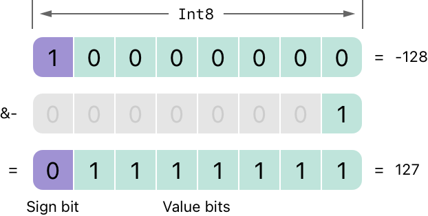
对于无符号与有符号整型数值来说，当出现上溢时，它们会从数值所能容纳的最大数变成最小数。同样地，当发生下溢时，它们会从所能容纳的最小数变成最大数。
优先级和结合性
运算符的优先级使得一些运算符优先于其他运算符；它们会先被执行。
结合性定义了相同优先级的运算符是如何结合的，也就是说，是与左边结合为一组，还是与右边结合为一组。可以将其理解为“它们是与左边的表达式结合的”，或者“它们是与右边的表达式结合的”。
当考虑一个复合表达式的计算顺序时，运算符的优先级和结合性是非常重要的。举例来说，运算符优先级解释了为什么下面这个表达式的运算结果会是 17。
xxxxxxxxxx2 + 3 % 4 * 5// 结果是 17如果你直接从左到右进行运算，你可能认为运算的过程是这样的：
- 2 + 3 = 5
- 5 % 4 = 1
- 1 * 5 = 5
但是正确答案是 17 而不是 5。优先级高的运算符要先于优先级低的运算符进行计算。与 C 语言类似，在 Swift 中，乘法运算符（*）与取余运算符（%）的优先级高于加法运算符（+）。因此，它们的计算顺序要先于加法运算。
而乘法运算与取余运算的优先级相同。这时为了得到正确的运算顺序，还需要考虑结合性。乘法运算与取余运算都是左结合的。可以将这考虑成，从它们的左边开始为这两部分表达式都隐式地加上括号：
xxxxxxxxxx2 + ((3 % 4) * 5)(3 % 4) 等于 3，所以表达式相当于：
xxxxxxxxxx2 + (3 * 5)3 * 5 等于 15，所以表达式相当于：
xxxxxxxxxx2 + 15因此计算结果为 17。
有关 Swift 标准库提供的操作符信息，包括操作符优先级组和结合性设置的完整列表，请参见 操作符声明。
注意
相对 C 语言和 Objective-C 来说，Swift 的运算符优先级和结合性规则更加简洁和可预测。但是，这也意味着它们相较于 C 语言及其衍生语言并不是完全一致。在对现有的代码进行移植的时候，要注意确保运算符的行为仍然符合你的预期。
运算符函数
类和结构体可以为现有的运算符提供自定义的实现。这通常被称为运算符重载。
下面的例子展示了如何让自定义的结构体支持加法运算符（+）。算术加法运算符是一个二元运算符，因为它是对两个值进行运算，同时它还可以称为中缀运算符，因为它出现在两个值中间。
例子中定义了一个名为 Vector2D 的结构体用来表示二维坐标向量 (x, y)，紧接着定义了一个可以将两个 Vector2D 结构体实例进行相加的运算符函数：
xstruct Vector2D { var x = 0.0, y = 0.0}
extension Vector2D { static func + (left: Vector2D, right: Vector2D) -> Vector2D { return Vector2D(x: left.x + right.x, y: left.y + right.y) }}该运算符函数被定义为 Vector2D 上的一个类方法，并且函数的名字与它要进行重载的 + 名字一致。因为加法运算并不是一个向量必需的功能，所以这个类方法被定义在 Vector2D 的一个扩展中，而不是 Vector2D 结构体声明内。而算术加法运算符是二元运算符，所以这个运算符函数接收两个类型为 Vector2D 的参数，同时有一个 Vector2D 类型的返回值。
在这个实现中，输入参数分别被命名为 left 和 right，代表在 + 运算符左边和右边的两个 Vector2D 实例。函数返回了一个新的 Vector2D 实例，这个实例的 x 和 y 分别等于作为参数的两个实例的 x 和 y 的值之和。
这个类方法可以在任意两个 Vector2D 实例中间作为中缀运算符来使用：
xxxxxxxxxxlet vector = Vector2D(x: 3.0, y: 1.0)let anotherVector = Vector2D(x: 2.0, y: 4.0)let combinedVector = vector + anotherVector// combinedVector 是一个新的 Vector2D 实例，值为 (5.0, 5.0)这个例子实现两个向量 (3.0，1.0) 和 (2.0，4.0) 的相加，并得到新的向量 (5.0，5.0)。这个过程如下图示：
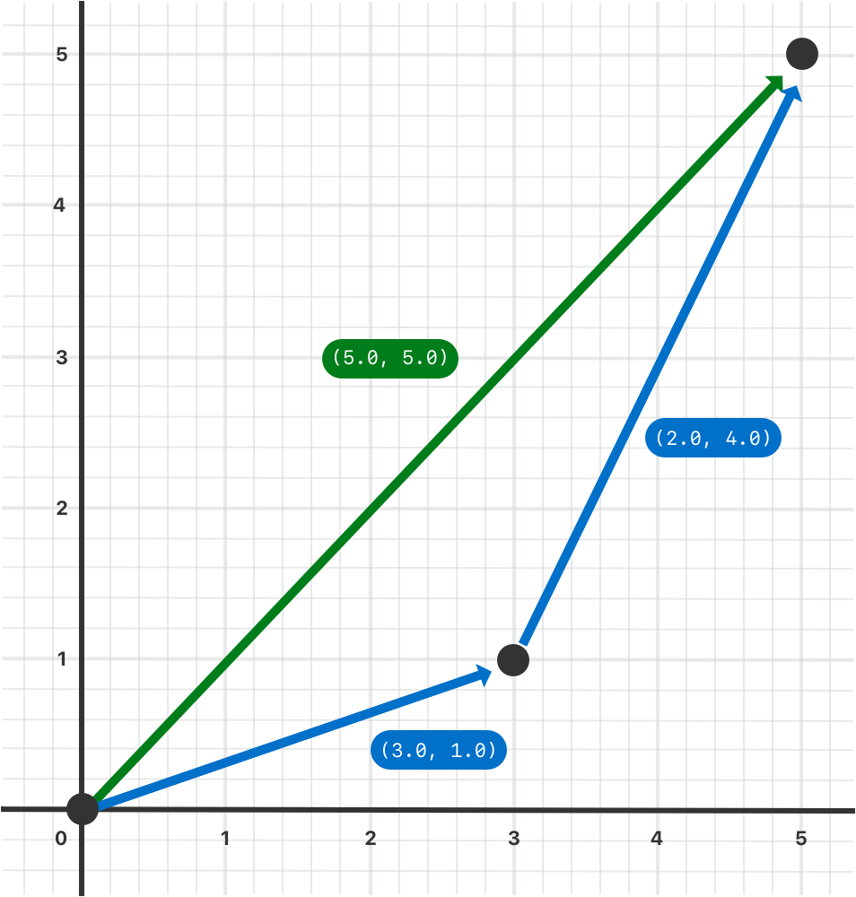
前缀和后缀运算符
上个例子演示了一个二元中缀运算符的自定义实现。类与结构体也能提供标准一元运算符的实现。一元运算符只运算一个值。当运算符出现在值之前时，它就是前缀的（例如 -a），而当它出现在值之后时，它就是后缀的（例如 b!）。
要实现前缀或者后缀运算符，需要在声明运算符函数的时候在 func 关键字之前指定 prefix 或者 postfix 修饰符：
xxxxxxxxxxextension Vector2D { static prefix func - (vector: Vector2D) -> Vector2D { return Vector2D(x: -vector.x, y: -vector.y) }}这段代码为 Vector2D 类型实现了一元运算符（-a）。由于该运算符是前缀运算符，所以这个函数需要加上 prefix 修饰符。
对于简单数值，一元负号运算符可以对它们的正负性进行改变。对于 Vector2D 来说，该运算将其 x 和 y 属性的正负性都进行了改变：
xxxxxxxxxxlet positive = Vector2D(x: 3.0, y: 4.0)let negative = -positive// negative 是一个值为 (-3.0, -4.0) 的 Vector2D 实例let alsoPositive = -negative// alsoPositive 是一个值为 (3.0, 4.0) 的 Vector2D 实例复合赋值运算符
复合赋值运算符将赋值运算符（=）与其它运算符进行结合。例如，将加法与赋值结合成加法赋值运算符（+=）。在实现的时候，需要把运算符的左参数设置成 inout 类型，因为这个参数的值会在运算符函数内直接被修改。
在下面的例子中，对 Vector2D 实例实现了一个加法赋值运算符函数：
xxxxxxxxxxextension Vector2D { static func += (left: inout Vector2D, right: Vector2D) { left = left + right }}因为加法运算在之前已经定义过了，所以在这里无需重新定义。在这里可以直接利用现有的加法运算符函数，用它来对左值和右值进行相加，并再次赋值给左值：
xxxxxxxxxxvar original = Vector2D(x: 1.0, y: 2.0)let vectorToAdd = Vector2D(x: 3.0, y: 4.0)original += vectorToAdd// original 的值现在为 (4.0, 6.0)注意
不能对默认的赋值运算符（
=）进行重载。只有复合赋值运算符可以被重载。同样地，也无法对三元条件运算符 （a ? b : c） 进行重载。
等价运算符
通常情况下，自定义的类和结构体没有对等价运算符进行默认实现，等价运算符通常被称为相等运算符（==）与不等运算符（!=）。
为了使用等价运算符对自定义的类型进行判等运算，需要为“相等”运算符提供自定义实现，实现的方法与其它中缀运算符一样, 并且增加对标准库 Equatable 协议的遵循：
xxxxxxxxxxextension Vector2D: Equatable { static func == (left: Vector2D, right: Vector2D) -> Bool { return (left.x == right.x) && (left.y == right.y) }}上述代码实现了“相等”运算符（==）来判断两个 Vector2D 实例是否相等。对于 Vector2D 来说，“相等”意味着“两个实例的 x 和 y 都相等”，这也是代码中用来进行判等的逻辑。如果你已经实现了“相等”运算符，通常情况下你并不需要自己再去实现“不等”运算符（!=）。标准库对于“不等”运算符提供了默认的实现，它简单地将“相等”运算符的结果进行取反后返回。
现在我们可以使用这两个运算符来判断两个 Vector2D 实例是否相等：
xxxxxxxxxxlet twoThree = Vector2D(x: 2.0, y: 3.0)let anotherTwoThree = Vector2D(x: 2.0, y: 3.0)if twoThree == anotherTwoThree { print("These two vectors are equivalent.")}// 打印“These two vectors are equivalent.”多数简单情况下，你可以让 Swift 合成等价运算符的实现，详见 使用合成实现来采纳协议。
自定义运算符
除了实现标准运算符，在 Swift 中还可以声明和实现自定义运算符。可以用来自定义运算符的字符列表请参考 运算符。
新的运算符要使用 operator 关键字在全局作用域内进行定义，同时还要指定 prefix、infix 或者 postfix 修饰符：
xxxxxxxxxxprefix operator +++上面的代码定义了一个新的名为 +++ 的前缀运算符。对于这个运算符，在 Swift 中并没有已知的意义，因此在针对 Vector2D 实例的特定上下文中，给予了它自定义的意义。对这个示例来讲，+++ 被实现为“前缀双自增”运算符。它使用了前面定义的复合加法运算符来让矩阵与自身进行相加，从而让 Vector2D 实例的 x 属性和 y 属性值翻倍。你可以像下面这样通过对 Vector2D 添加一个 +++ 类方法，来实现 +++ 运算符：
xxxxxxxxxxextension Vector2D { static prefix func +++ (vector: inout Vector2D) -> Vector2D { vector += vector return vector }}
var toBeDoubled = Vector2D(x: 1.0, y: 4.0)let afterDoubling = +++toBeDoubled// toBeDoubled 现在的值为 (2.0, 8.0)// afterDoubling 现在的值也为 (2.0, 8.0)自定义中缀运算符的优先级
每个自定义中缀运算符都属于某个优先级组。优先级组指定了这个运算符相对于其他中缀运算符的优先级和结合性。优先级和结合性 中详细阐述了这两个特性是如何对中缀运算符的运算产生影响的。
而没有明确放入某个优先级组的自定义中缀运算符将会被放到一个默认的优先级组内，其优先级高于三元运算符。
以下例子定义了一个新的自定义中缀运算符 +-，此运算符属于 AdditionPrecedence 优先组：
xxxxxxxxxxinfix operator +-: AdditionPrecedenceextension Vector2D { static func +- (left: Vector2D, right: Vector2D) -> Vector2D { return Vector2D(x: left.x + right.x, y: left.y - right.y) }}let firstVector = Vector2D(x: 1.0, y: 2.0)let secondVector = Vector2D(x: 3.0, y: 4.0)let plusMinusVector = firstVector +- secondVector// plusMinusVector 是一个 Vector2D 实例，并且它的值为 (4.0, -2.0)这个运算符把两个向量的 x 值相加，同时从第一个向量的 y 中减去第二个向量的 y 。因为它本质上是属于“相加型”运算符，所以将它放置在 + 和 - 等默认中缀“相加型”运算符相同的优先级组中。关于 Swift 标准库提供的运算符，以及完整的运算符优先级组和结合性设置，请参考 运算符声明。而更多关于优先级组以及自定义操作符和优先级组的语法，请参考 运算符声明。
注意
当定义前缀与后缀运算符的时候，我们并没有指定优先级。然而，如果对同一个值同时使用前缀与后缀运算符，则后缀运算符会先参与运算。
结果构造器
结果构造器是一种自定义类型，支持添加自然的声明式语法来创建类似列表或者树这样的嵌套数据。使用结果构造器的代码可以包含普通的 Swift 语法，例如用来处理判断条件的 if，或者处理重复数据的 for。
下面的代码定义了一些类型用于绘制星星线段和文字线段。
xxxxxxxxxxprotocol Drawable { func draw() -> String}struct Line: Drawable { var elements: [Drawable] func draw() -> String { return elements.map { $0.draw() }.joined(separator: "") }}struct Text: Drawable { var content: String init(_ content: String) { self.content = content } func draw() -> String { return content }}struct Space: Drawable { func draw() -> String { return " " }}struct Stars: Drawable { var length: Int func draw() -> String { return String(repeating: "*", count: length) }}struct AllCaps: Drawable { var content: Drawable func draw() -> String { return content.draw().uppercased() }}Drawable 协议定义了绘制所需要遵循的方法，例如线或者形状都需要实现 draw() 方法。Line 结构体用来表示单行线段绘制，给大多数可绘制的元素提供了顶层容器。绘制 Line 时，调用了线段中每个元素的 draw()，然后将所有结果字符串连成单个字符串。Text 结构体包装了一个字符串作为绘制的一部分。AllCaps 结构体包装另一个可绘制元素，并将元素中所有文本转换为大写。
可以组合这些类型的构造器来创建一个可绘制元素。
xxxxxxxxxxlet name: String? = "Ravi Patel"let manualDrawing = Line(elements: [ Stars(length: 3), Text("Hello"), Space(), AllCaps(content: Text((name ?? "World") + "!")), Stars(length: 2), ])print(manualDrawing.draw())// 打印 "***Hello RAVI PATEL!**"代码没问题，但是不够优雅。AllCaps 后面的括号嵌套太深，可读性不佳。name 为 nil 时使用 “World” 的兜底逻辑必须要依赖 ?? 操作符，这在逻辑复杂的时候会更难以阅读。如果还需要 switch 或者 for 循环来构建绘制的一部分，就更难以编写了。使用结果构造器可以将这样的代码重构得更像普通的 Swift 代码。
在类型的定义上加上 @resultBuilder 特性来定义一个结果构造器。比如下面的代码定义了允许使用声明式语法来描述绘制的结果构造器 DrawingBuilder：
xxxxxxxxxx@resultBuilderstruct DrawingBuilder { static func buildBlock(_ components: Drawable...) -> Drawable { return Line(elements: components) } static func buildEither(first: Drawable) -> Drawable { return first } static func buildEither(second: Drawable) -> Drawable { return second }}DrawingBuilder 结构体定义了三个方法来实现部分结果构造器语法。buildBlock(_:) 方法添加了在方法块中写多行代码的支持。它将方法块中的多个元素组合成 Line。buildEither(first:) 和 buildEither(second:) 方法添加了对 if-else 的支持。
可以在函数形参上应用 @DrawingBuilder 特性，它会将传递给函数的闭包转换为用结果构造器创建的值。例如：
xxxxxxxxxxfunc draw(@DrawingBuilder content: () -> Drawable) -> Drawable { return content()}func caps(@DrawingBuilder content: () -> Drawable) -> Drawable { return AllCaps(content: content())}
func makeGreeting(for name: String? = nil) -> Drawable { let greeting = draw { Stars(length: 3) Text("Hello") Space() caps { if let name = name { Text(name + "!") } else { Text("World!") } } Stars(length: 2) } return greeting}let genericGreeting = makeGreeting()print(genericGreeting.draw())// 打印 "***Hello WORLD!**"
let personalGreeting = makeGreeting(for: "Ravi Patel")print(personalGreeting.draw())// 打印 "***Hello RAVI PATEL!**"makeGreeting(for:) 函数将传入的 name 形参用于绘制个性化问候。draw(_:) 和 caps(_:) 函数都传入应用 @DrawingBuilder 特性的单一闭包实参。当调用这些函数时，要使用 DrawingBuilder 定义的特殊语法。Swift 将绘制的声明式描述转换为一系列 DrawingBuilder 的方法调用，构造成最终传递进函数的实参值。例如，Swift 将例子中的 caps(_:) 的调用转换为下面的代码：
xxxxxxxxxxlet capsDrawing = caps { let partialDrawing: Drawable if let name = name { let text = Text(name + "!") partialDrawing = DrawingBuilder.buildEither(first: text) } else { let text = Text("World!") partialDrawing = DrawingBuilder.buildEither(second: text) } return partialDrawing}Swift 将 if-else 方法块转换成调用 buildEither(first:) 和 buildEither(second:) 方法。虽然不会在自己的代码中调用这些方法，但是转换后的结果可以更清晰的理解在使用 DrawingBuilder 语法时 Swift 是如何进行转换的。
为了支持 for 循环来满足某些特殊的绘制语法，需要添加 buildArray(_:) 方法。
xxxxxxxxxxextension DrawingBuilder { static func buildArray(_ components: [Drawable]) -> Drawable { return Line(elements: components) }}let manyStars = draw { Text("Stars:") for length in 1...3 { Space() Stars(length: length) }}上面的代码中，使用 for 循环创建了一个绘制数组，buildArray(_:) 方法将该数组构建成 Line。
有关 Swift 如何将构建器语法转换为构建器类型方法的完整信息，查看 结果构造器。